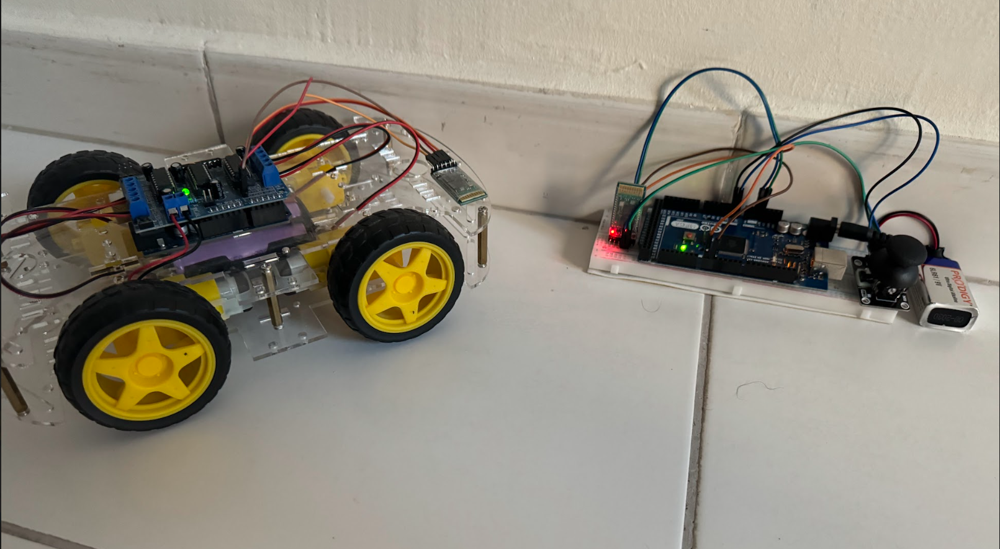
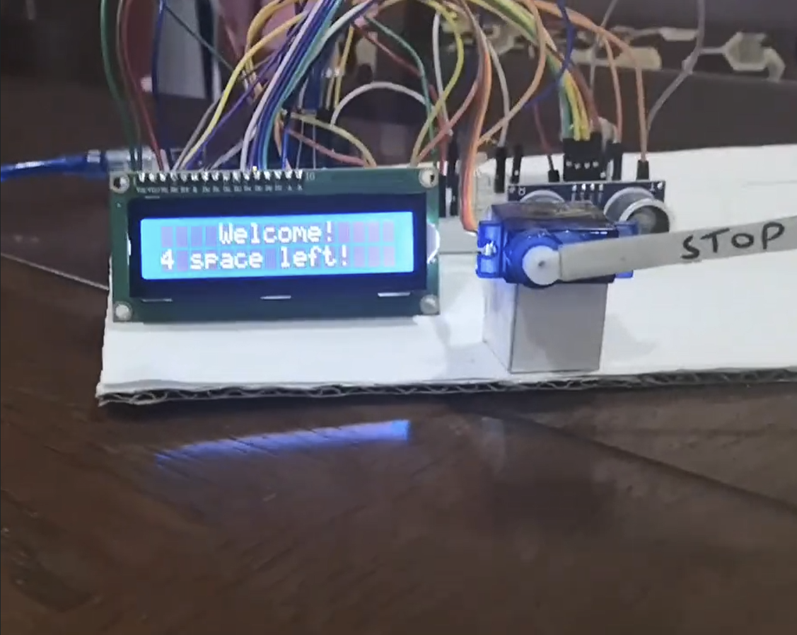
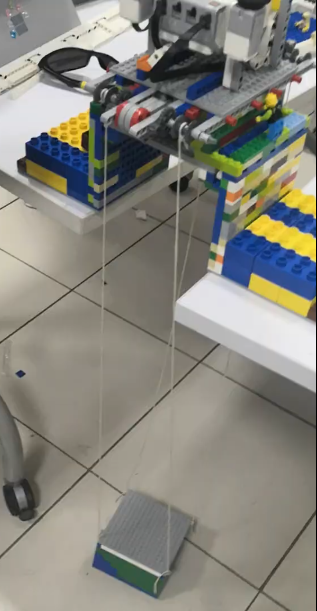

Projects
Selected builds spanning embedded control, mechanical automation, and wireless systems.

Bluetooth-Enabled Rover System
The Bluetooth-Enabled Rover System is a remotely operated omni-directional vehicle designed for high power efficiency and low maintenance. Built using an Arduino, a Bluetooth module, and a joystick interface for real-time steering, it delivers smooth, responsive wireless control with minimal operational overhead.

Intelligent Automated Gate Design
The Intelligent Automated Gate Design is an automated access control system created to manage vehicle entry and monitor parking availability in real time. It integrates an Arduino, ultrasonic sensors, a servo motor gate, and an LCD status display to track vehicles accurately. Through iterative testing, the project successfully resolved data synchronization challenges to deliver precise, reliable parking tracking.

EV3 - Elevator Shaft System
The EV3 Elevator Shaft System is a multi-story cargo lifting platform engineered to carry heavy loads securely. The system was upgraded from a LEGO EV3 brick to an Arduino Uno controller paired with dual servo safety gates and a dedicated status display. This hardware transition enabled live status tracking while allowing the structure to exceed its initial load capacity expectations.

EV3 - Line Follower
The EV3 Line Follower is an autonomous mobile robot built to track and navigate predefined paths without manual intervention. It utilizes infrared sensors and block-programmed motor controls across both LEGO EV3 and Spike Prime platforms to execute guided tracks. The final build demonstrated high precision, excellent cornering accuracy, and reliable path tracking.